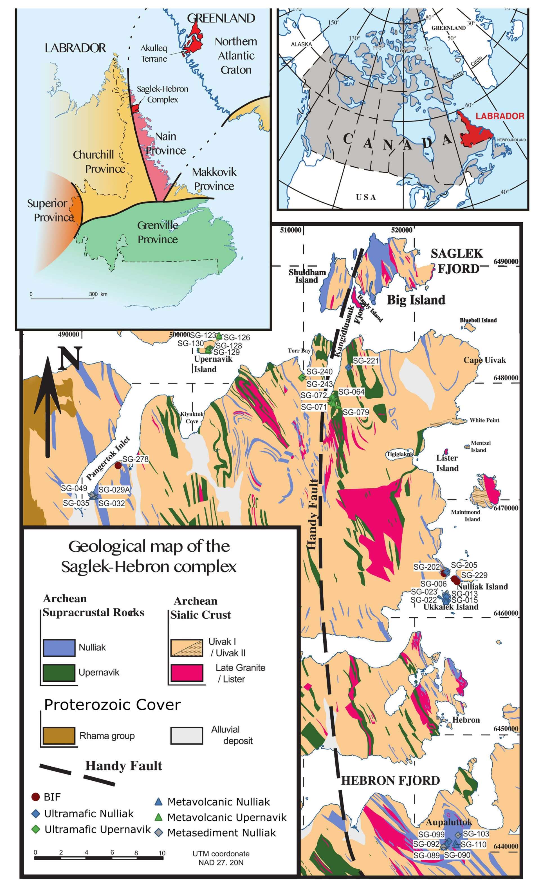
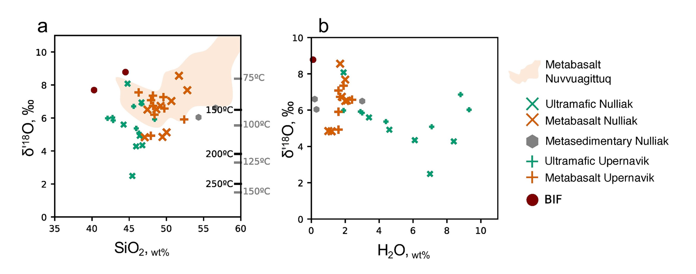
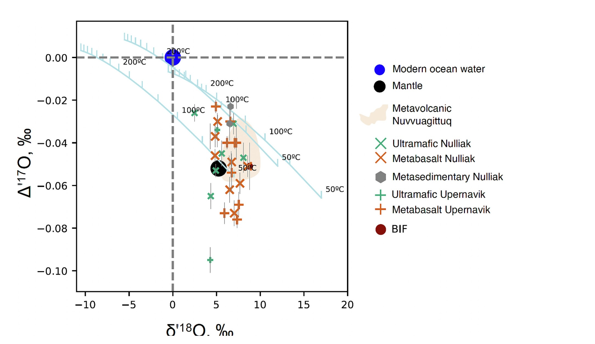
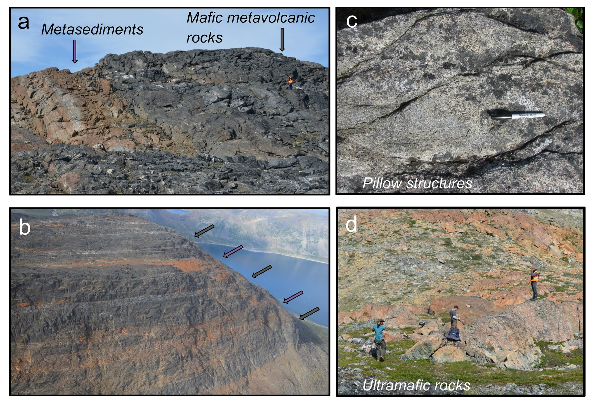
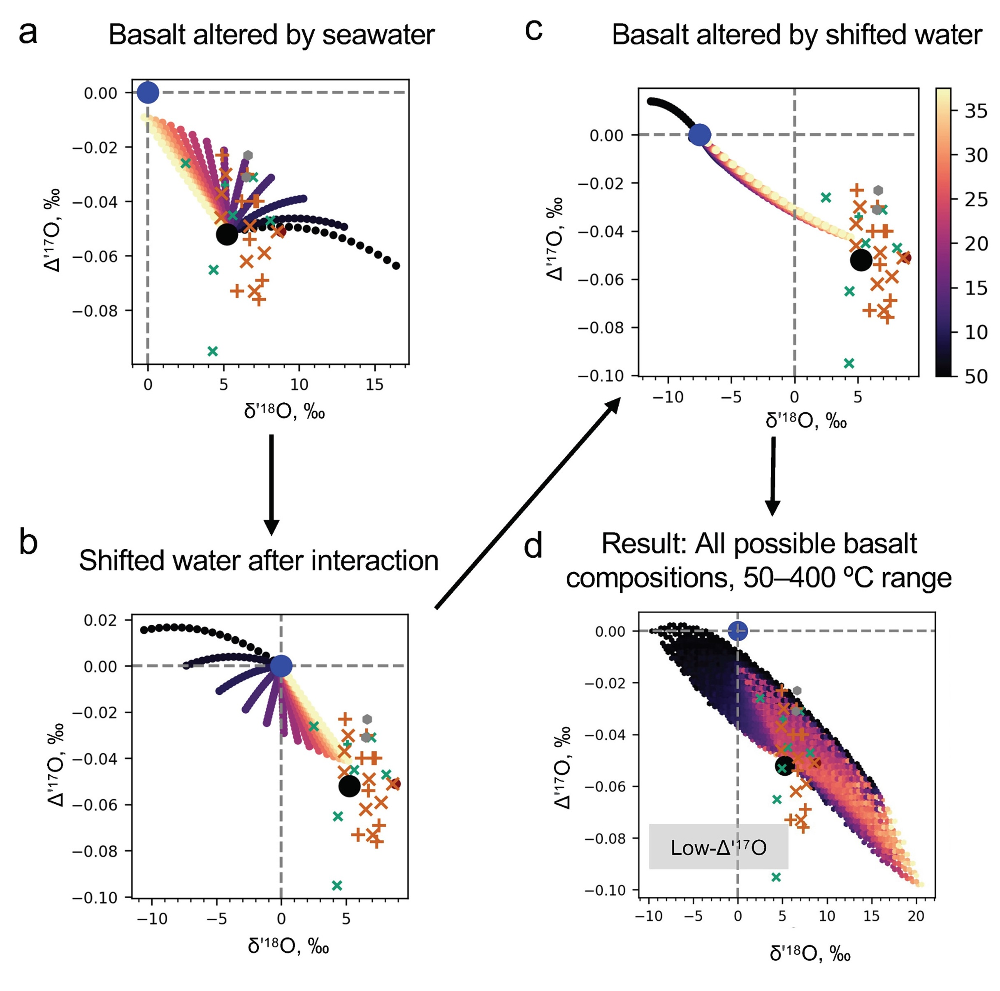
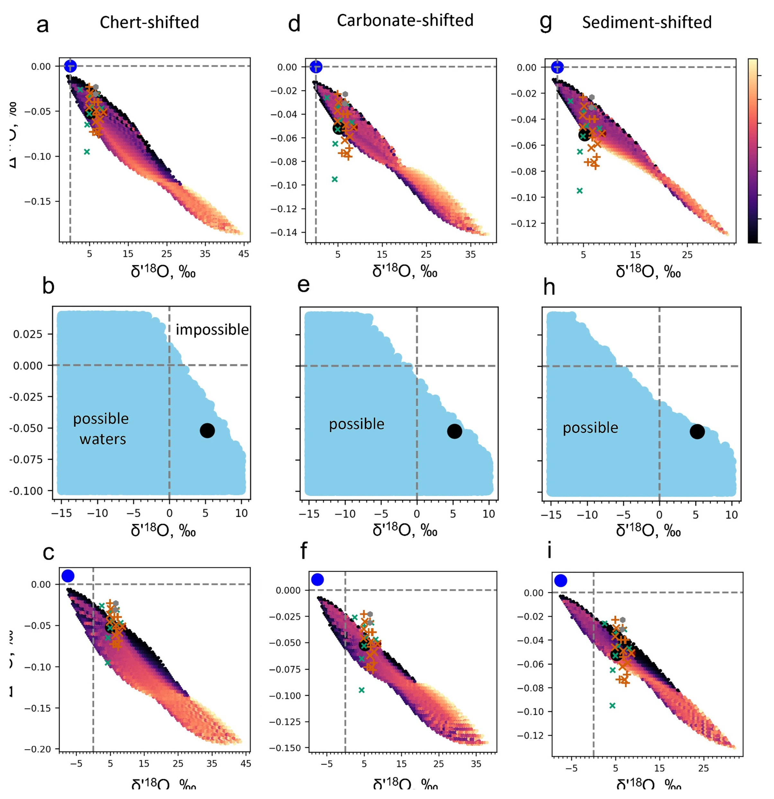

The faint young Sun problem
This is difficult to answer because the main evidence comes from rocks that have been altered, buried, metamorphosed, and exposed again. The problem begins with the faint young Sun. During the Archean, the Sun was about 20-25% less luminous than today (Sagan and Mullen, 1972). With the modern atmosphere, this would make Earth difficult to keep warm. Yet the geological record shows liquid water, sedimentation, submarine volcanism, hydrothermal alteration, and early life. This is the faint young Sun problem: a weaker Sun, but a planet that was not frozen.
Several mechanisms could help. The early atmosphere may have contained more greenhouse gases, especially CO2 and possibly CH4. Continents were probably smaller, which may have changed the balance between volcanic degassing, weathering, and carbon burial. Clouds, atmospheric pressure, ocean circulation, and rotation rate may also have differed from today. The early Earth could have been warm even under a weaker Sun. But the key question is how warm, and whether the isotope record really measures temperature.

Oxygen isotope ambiguity
Oxygen isotopes are one of the main tools for this question. The basic idea is that minerals forming or reacting in water record the oxygen isotope composition of that water and the temperature of interaction – due to mass-dependent fractionation. At low temperature, mineral-water isotope fractionation is large. At high temperature, fractionation is smaller. So a low δ18O value in an ancient marine mineral can be read in two different ways: either the mineral formed at high temperature, or the water itself had lower δ18O than modern seawater. This ambiguity is the core of the early ocean problem.
Ancient cherts, carbonates, and shales commonly have lower δ18O values than younger equivalents (Bindeman, 2021). If seawater δ18O stayed close to the modern value, then many Archean marine sediments imply hot oceans. This interpretation has been argued from chert records, including estimates of Archean seawater temperatures several tens of degrees above modern values (Knauth and Lowe, 2003). A similar conclusion was supported by silicon isotope work on Precambrian cherts, which suggested long-term cooling of seawater from Archean to Proterozoic time (Robert and Chaussidon, 2006).

Can seawater buffer itself?
The alternative is that early seawater was not modern in δ18O. In that case, low δ18O in Archean sediments does not require extremely hot oceans. It could reflect a hydrosphere that was isotopically lighter. This interpretation keeps early surface temperatures more moderate, but it requires the oxygen isotope composition of seawater to have changed through time (Kasting et al., 2006; Jaffrés et al., 2007).
Muehlenbachs and Clayton (1976) connected the composition of seawater with the style of hydrothermal alteration and weathering. They showed that seawater reacts with oceanic crust at both low and high temperature. Low-temperature alteration of upper oceanic basalt increases the δ18O of the rock and removes 18O from seawater. High-temperature exchange deeper in the crust does the opposite: it lowers the δ18O of gabbros and other intrusive rocks and adds 18O back to seawater. Their mass-balance model suggested that these opposing processes could keep seawater close to modern δ18O over geological time (Muehlenbachs and Clayton, 1976; Muehlenbachs, 1998).
This is why the Muehlenbachs-Clayton model became so important. If oceanic crust buffers seawater δ18O near 0‰, then the low δ18O values of ancient cherts and carbonates are more naturally interpreted as high-temperature signals. In addition, weathering, which is a very low-temperature process, should lead to a lighter oxygen isotopic composition, potentially signalling the existence of early continents. But the record is complicated. Cherts, carbonates, and shales do not all record the same reservoir in the same way. Cherts and carbonates are closer to seawater proxies, but they can be affected by diagenesis and later fluid exchange. Shales mostly record weathering by meteoric water and sediment recycling. Bindeman's review showed that these archives all show a long-term increase in δ18O, but with different patterns and magnitudes (Bindeman, 2021). The signal is global, but it is not controlled by one simple process.
Triple oxygen isotopes
Triple oxygen isotopes add another constraint. Normal oxygen isotope work uses 18O/16O. Triple oxygen isotope work also measures 17O/16O. This matters because δ18O alone mixes temperature and water composition. Adding Δ′17O gives an extra check on the same isotope system. In theory, this lets us test whether a rock or mineral fits equilibrium with seawater, or whether it needs a different water composition, diagenesis, kinetic effects, or a multi-stage fluid history.
This approach has been developed for silica-water and carbonate-water systems (Sharp et al., 2016; Wostbrock and Sharp, 2021). Triple oxygen isotopes do not solve every problem, but they rule out some interpretations. A sample that looks reasonable in δ18O alone may fail in Δ′17O- δ′18O space.

Saglek-Hebron oceanic crust
Our work applies this logic to early oceanic crust itself. Instead of using only sedimentary proxies, we studied rocks from the Saglek-Hebron Complex in northern Labrador, Canada. These rocks include Eoarchean to Paleoarchean metavolcanic rocks, ultramafic rocks, and metasedimentary rocks. Some of the volcanic rocks preserve submarine features, including pillow structures. This makes them a rare archive of early seawater-oceanic crust interaction.

The study used triple oxygen isotopes and hydrogen isotopes in hydrothermally altered rocks. The oxygen isotope data show that the rocks preserve a signal from submarine hydrothermal alteration. The hydrogen isotope data are less direct because hydrogen was more strongly affected by later metamorphism and rehydration. This contrast is important: not every isotope system survives the same geological history.
The Saglek-Hebron metavolcanic rocks have δ′18O values from 4.83‰ to 8.56‰ and Δ′17O values from -0.076‰ to -0.023‰. Some samples have Δ′17O lower than expected for simple interaction between basalt and modern-like seawater. A one-stage seawater-basalt model does not explain the full dataset. This means that the rocks did not simply react once with pristine seawater and then preserve that composition unchanged.
Multi-stage water-rock interaction
A better explanation is multi-stage water-rock interaction. Seawater first reacts with one part of the crust, shifting its isotope composition. That modified fluid then reacts with another rock layer. Interaction with chemical sediments, such as chert- or carbonate-rich layers, can shift the fluid further. In this kind of system, the final rock composition records a pathway, not just the original seawater.

The modelling favours an Eoarchean ocean with moderately low δ′18O, commonly below -8‰, rather than a strictly modern-like ocean. This does not make every ancient low-δ18O signal a direct seawater value. Altered oceanic crust is indirect evidence for seawater. To read it properly, the model must include temperature, water-rock ratio, fluid mixing, sediment interaction, and the possibility that the fluid had already been shifted before it reached the sampled rock.

What this changes
This result changes the classical ocean-buffering picture. Seawater and oceanic crust clearly interact, but individual ancient crustal sections do not simply preserve the global seawater value. The coupling between seawater and oceanic crust may have been weaker, more local, or more heterogeneous than assumed in simple box models. In the Saglek-Hebron case, the isotope record is useful because it preserves hydrothermal processing, not because it is an unfiltered seawater sample.
The main conclusion is that early Earth isotope work is not a choice between "hot ocean" and "cold ocean". The question is how temperature, seawater composition, crustal alteration, sediment interaction, and later metamorphism combined to produce the preserved rock record. Triple oxygen isotopes are useful because they show when a single-stage explanation fails. They help separate seawater information from the history of fluids moving through ancient oceanic crust.